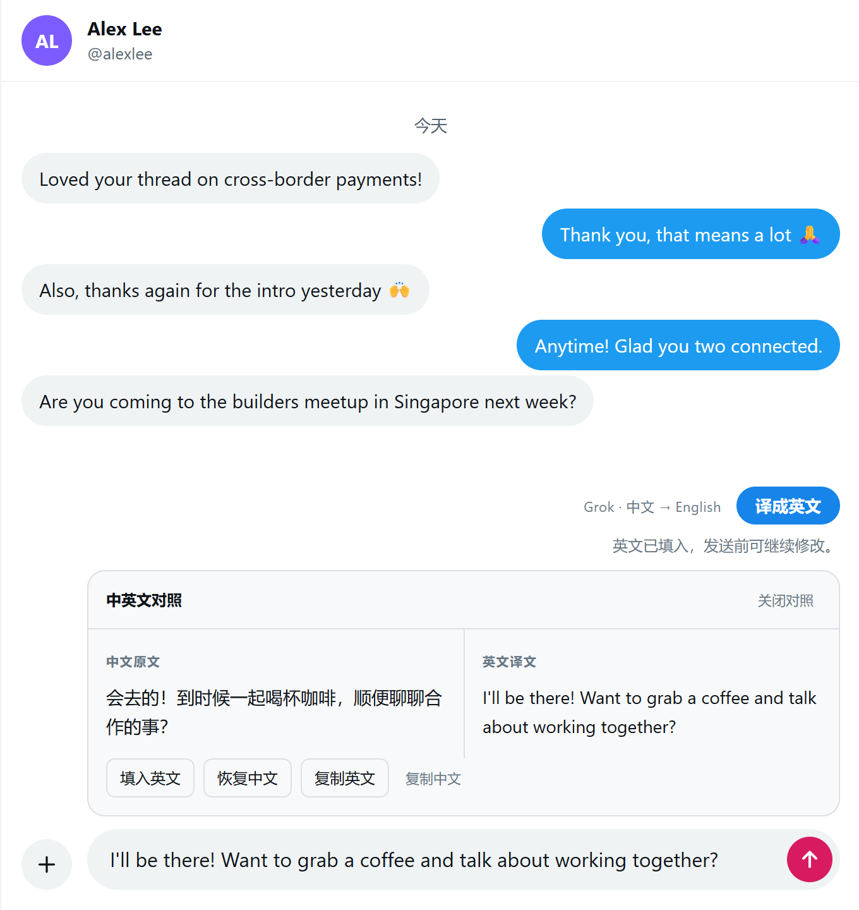

<!doctype html>
<!-- Store images for X 评论聊天翻译. Open as shots.html?shot=1|2|3|tile|marquee and screenshot at the
     matching size; render.cjs does both. raw/*.png are captures of the real extension (2x). -->
<html lang="zh-CN">
<head>
<meta charset="utf-8">
<style>
  @font-face { font-family: "Inter Tight"; font-weight: 100 900; src: url("fonts/inter-tight-latin-wght-normal.woff2") format("woff2");
    unicode-range: U+0000-00FF, U+2000-206F, U+2191, U+2193, U+2212; }
  @font-face { font-family: "Geist Mono"; font-weight: 500; src: url("fonts/geist-mono-latin-500-normal.woff2") format("woff2");
    unicode-range: U+0000-00FF, U+2000-206F, U+2191, U+2193, U+2212; }
  :root {
    --bg: #fafaf9; --panel: #fff; --line: #e8e8e6; --line-soft: #efefec; --fg: #0c0c0d; --muted: #6b6b73;
    --signal: #ff5a1f; --blue: #1d9bf0;
    --sans: "Inter Tight", "Microsoft YaHei", "PingFang SC", sans-serif; --mono: "Geist Mono", "Cascadia Mono", monospace;
  }
  * { box-sizing: border-box; }
  html, body { margin: 0; }
  body { width: 1280px; height: 800px; overflow: hidden; position: relative; background: var(--bg); color: var(--fg); font-family: var(--sans); }
  /* faint 32px grid, like the zuoye.si pages, fading out towards the right */
  body::before { content: ""; position: absolute; inset: 0;
    background-image: linear-gradient(var(--line-soft) 1px, transparent 1px), linear-gradient(90deg, var(--line-soft) 1px, transparent 1px);
    background-size: 32px 32px; -webkit-mask-image: linear-gradient(90deg, #000 0%, rgba(0,0,0,.5) 45%, transparent 75%); }
  body::after { content: ""; position: absolute; width: 760px; height: 760px; right: -160px; top: 20px; border-radius: 50%;
    background: radial-gradient(closest-side, rgba(255, 90, 31, .10), rgba(29, 155, 240, .06) 55%, transparent); }

  .stage { position: absolute; inset: 0; z-index: 1; display: flex; align-items: center; gap: 64px; padding: 0 72px 0 88px; }
  .copy { flex: 0 0 430px; }
  .brand { display: flex; align-items: center; gap: 12px; font-size: 19px; font-weight: 700; margin-bottom: 44px; }
  .brand img, .brand svg { width: 40px; height: 40px; }
  .brand small { display: block; font-size: 13px; font-weight: 400; color: var(--muted); margin-top: 2px; }
  .eyebrow { font: 500 13px/1 var(--mono); letter-spacing: .14em; color: var(--signal); margin-bottom: 18px; }
  h1 { margin: 0 0 22px; font-size: 54px; line-height: 1.16; font-weight: 800; letter-spacing: -.01em; }
  h1 em { font-style: normal; color: var(--signal); }
  .sub { margin: 0 0 34px; font-size: 19px; line-height: 1.75; color: var(--muted); }
  .points { list-style: none; margin: 0; padding: 0; display: grid; gap: 15px; font-size: 18px; }
  .points li { display: flex; gap: 14px; align-items: baseline; }
  .points li::before { content: ""; flex: 0 0 8px; height: 8px; border-radius: 2px; background: var(--signal); transform: translateY(-3px); }

  .visual { flex: 1; display: flex; justify-content: center; align-items: center; }
  .frame { position: relative; overflow: hidden; border-radius: 18px; background: var(--panel);
    border: 1px solid var(--line); box-shadow: 0 32px 70px -24px rgba(12, 12, 13, .28), 0 2px 6px rgba(12, 12, 13, .06); }
  .frame img { display: block; }
  .fade::after { content: ""; position: absolute; left: 0; right: 0; bottom: 0; height: 56px; background: linear-gradient(transparent, #fff); }

  /* 1: reply on a post page (raw 602×872 at 1x); the top bar is cropped off */
  .shot-1 .frame { width: 556px; height: 712px; }
  .shot-1 .frame img { width: 554px; margin-top: -48px; }
  /* 2: X Chat (raw 680×720 at 1x) */
  .shot-2 .frame { width: 614px; height: 650px; }
  .shot-2 .frame img { width: 612px; }
  /* 3: settings page cards (raw 760×1177 at 1x; cards span y 300–915, x 64–696) */
  .shot-3 .frame { width: 600px; height: 590px; background: #f5f7fa; }
  .shot-3 .frame img { width: 702px; margin: -269px 0 0 -52px; }

  /* promo tiles: saturated signal orange, white glyph */
  body.tile, body.marquee { color: #fff; background: linear-gradient(135deg, #ff7a3d 0%, #ff5a1f 45%, #e8440c 100%); }
  body.tile::before, body.marquee::before { background-image: linear-gradient(rgba(255,255,255,.08) 1px, transparent 1px), linear-gradient(90deg, rgba(255,255,255,.08) 1px, transparent 1px);
    -webkit-mask-image: radial-gradient(circle at 20% 30%, #000, transparent 75%); }
  body.tile::after, body.marquee::after { display: none; }
  body.tile { width: 440px; height: 280px; }
  .tile-in { position: absolute; inset: 0; z-index: 1; display: flex; flex-direction: column; justify-content: center; padding: 0 36px; }
  .tile-in svg { width: 76px; height: 76px; margin-bottom: 18px; }
  .tile-in b { font-size: 34px; line-height: 1.1; letter-spacing: -.01em; }
  .tile-in span { margin-top: 10px; font-size: 18px; opacity: .92; }
  .tile-in .big { position: absolute; right: -34px; bottom: -40px; width: 230px; height: 230px; margin: 0; opacity: .14; }
  .tile-in .chip { align-self: flex-start; margin-top: 18px; padding: 6px 12px; border-radius: 999px; background: rgba(255,255,255,.18); font: 500 12px/1 var(--mono); letter-spacing: .12em; }
  body.marquee { width: 1400px; height: 560px; }
  .marquee .stage { padding: 0 0 0 96px; gap: 80px; align-items: flex-start; }
  .marquee .copy { flex: 0 0 520px; margin-top: 112px; }
  .marquee .brand { color: #fff; margin-bottom: 34px; }
  .marquee .brand small { color: rgba(255,255,255,.85); }
  .marquee h1 { font-size: 60px; }
  .marquee h1 em { color: #fff; }
  .marquee .sub { color: rgba(255,255,255,.92); font-size: 20px; }
  .marquee .visual { justify-content: flex-start; align-items: flex-start; padding-top: 64px; }
  .marquee .frame { width: 556px; height: 560px; border: 0; border-radius: 18px 18px 0 0; box-shadow: 0 30px 80px rgba(80, 20, 0, .35); }
  .marquee .frame img { width: 554px; margin-top: -48px; }
</style>
</head>
<body>
<script>
  // White version of the extension glyph (tools/make-icons.cjs) for the orange promo tiles.
  const GLYPH = (short = '#cfeaff') => `<svg viewBox="3 3 26 26" fill="none" stroke-width="3" stroke-linecap="round" stroke-linejoin="round">
    <path d="M11.5 6.5H20.5A6 6 0 0 1 26.5 12.5V15.5A6 6 0 0 1 20.5 21.5H15.5L10 25.5L11.5 21.5H11.5A6 6 0 0 1 5.5 15.5V12.5A6 6 0 0 1 11.5 6.5Z" stroke="#fff"/>
    <path d="M11 12.5h10" stroke="#fff"/><path d="M11 16.5h6" stroke="${short}"/></svg>`;
  const brand = icon => `<div class="brand">${icon}<div>X 评论聊天翻译<small>消除语言的隔阂</small></div></div>`;
  const copy = (eyebrow, title, sub, points) => `<div class="copy">${brand('')}
    <div class="eyebrow">${eyebrow}</div><h1>${title}</h1><p class="sub">${sub}</p>
    <ul class="points">${points.map(p => `<li>${p}</li>`).join('')}</ul></div>`;
  const shots = {
    1: () => `<div class="stage shot-1">${copy('01 · 评论', '写中文，<br><em>发英文。</em>',
        '在 X 评论框写中文，点「译成英文」，英文自动填回原输入框，并附中英对照。',
        ['一键翻译，直接填回评论框', '中英对照，发布前看得清楚', '翻译时继续改稿，不会被覆盖'])}
      <div class="visual"><div class="frame fade"></div></div></div>`,
    2: () => `<div class="stage shot-2">${copy('02 · 聊天', '私信也能<br><em>用英文聊。</em>',
        '在 X 聊天输入框写中文，一键译成英文。这个功能默认关闭，在设置里打开后才生效。',
        ['只翻译你点的这段草稿', '不读取聊天记录和对方消息', '不会自动发送，发送由你决定'])}
      <div class="visual"><div class="frame"></div></div></div>`,
    3: () => `<div class="stage shot-3">${copy('03 · 授权', '用你自己的<br><em>Grok 账号。</em>',
        '在 xAI 官方页面授权，不用填 API Key。默认选用不推理的快速模型，短句通常一两秒就译完。',
        ['登录加密保存在本机，重启不用重新授权', '断网时保留登录，联网后自动续期', '非 X / xAI 官方产品'])}
      <div class="visual"><div class="frame"></div></div></div>`,
    tile: () => `<div class="tile-in">${GLYPH()}<b>X 评论聊天翻译</b><span>消除语言的隔阂</span><span class="chip">中文 → ENGLISH</span>${GLYPH('#fff').replace('<svg ', '<svg class="big" ')}</div>`,
    marquee: () => `<div class="stage"><div class="copy">${brand(GLYPH())}
        <h1>写中文，<em>发英文。</em></h1><p class="sub">X 评论和聊天里的中文草稿，一键译成英文并填回原框，附中英对照，核对后由你自己发布。</p></div>
      <div class="visual"><div class="frame"></div></div></div>`
  };
  const shot = new URLSearchParams(location.search).get('shot') || '1';
  if (shot === 'tile' || shot === 'marquee') document.body.className = shot;
  document.body.insertAdjacentHTML('beforeend', shots[shot]());
</script>
</body>
</html>
